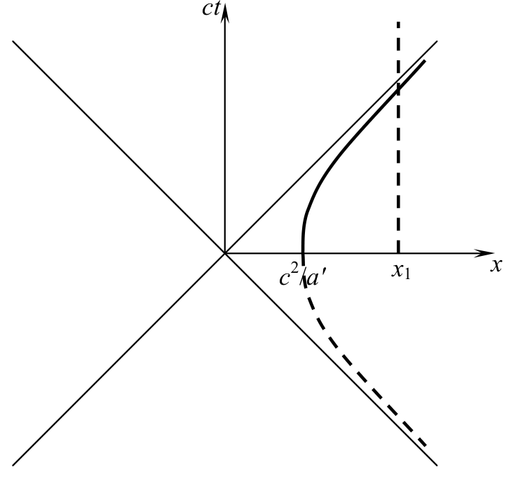
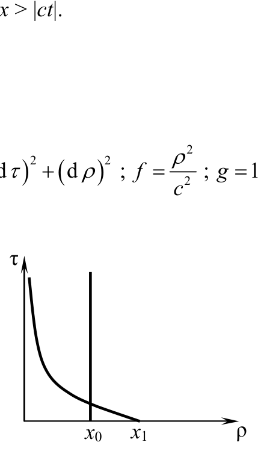
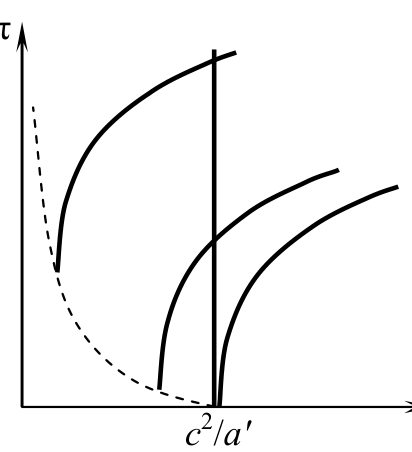
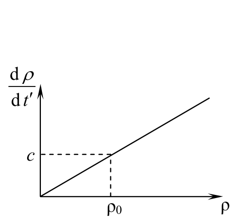

원문: Romanian Master of Physics 2012, PROBLEM No. 3 해설. 배점은 원문대로 pt로 표기한다.
로런츠 변환(Lorentz transformation)을 두 번 미분하면 다음을 얻는다.
\[a_x = a'_x\left(\frac{\sqrt{1-\dfrac{u^2}{c^2}}}{1+\dfrac{u}{c^2}v'_x}\right)^3\]우리의 경우 $u = v_x$이고 $v'_x = 0$이다.
\[\frac{\mathrm{d}v_x}{\mathrm{d}t} = a'\left(1-\frac{v_x^2}{c^2}\right)^{\frac32}\] \[F_x = \frac{ma_x}{1-\dfrac{v_x^2}{c^2}} = m_0a' = \text{constant}\]$t = 0$에서 $v_x = 0$이므로 $\alpha = 0$이고 $C = 0$이다.
\[\frac{\dfrac{v_x}{c}}{\sqrt{1-\dfrac{v_x^2}{c^2}}} = \frac{a't}{c} \Rightarrow v = c\,\frac{\dfrac{a't}{c}}{\sqrt{1+\left(\dfrac{a't}{c}\right)^2}}\]다시 $C = 0$이므로
\[t' = \frac{c}{a'}\operatorname{arcsinh}\left(\frac{a't}{c}\right)\]$t = t' = 0$에서 $x_0 = c^2/a'$이므로 다시 $C = 0$이다.

이 방정식들은 $x > 0$이고 $\rho > 0$일 것을 요구하므로, 이 새로운 매개변수들로는 $x > |ct|$로 특징지어지는 시공간의 사분면만을 덮을 수 있다.

관측자는 신호기(beacon)가 린들러 계량(Rindler metric)으로 기술되는 시공간 사분면을 벗어나기 전에 방출된 신호만을 받는다.
\[ct \le x = x_0 \Rightarrow t_\text{lim} = \frac{x_0}{c} \Rightarrow N = \left[\frac{t_\text{lim}}{T_0}\right]+1 = \left[\frac{x_0}{cT_0}\right]+1\]빛의 경우,
\[ds^2 = 0 \Rightarrow \left(\mathrm{d}\rho\right)^2 = \rho^2\left(\mathrm{d}\tau\right)^2 \Rightarrow \frac{\mathrm{d}\rho}{\rho} = \mathrm{d}\tau\]$\tau = 0$에서 $\rho_0 = x_0$이므로
\[\ln\frac{\rho}{\rho_0} = \tau \Rightarrow \rho = x_0\,\mathrm{e}^\tau\]
펄스가 방출되는 시공간 좌표를 $\rho_\mathrm{e}$, $\tau_\mathrm{e}$라 하자.
\[\rho_\mathrm{e} = \sqrt{x_0^2-c^2t^2}\,;\quad \tau_\mathrm{e} = \operatorname{arctanh}\left(\frac{ct}{x_0}\right)\] \[\tanh\tau_\mathrm{e} = \frac{\mathrm{e}^{\tau_\mathrm{e}}-\mathrm{e}^{-\tau_\mathrm{e}}}{\mathrm{e}^{\tau_\mathrm{e}}+\mathrm{e}^{-\tau_\mathrm{e}}} = \frac{ct}{x_0} \Rightarrow \mathrm{e}^{2\tau_\mathrm{e}}-1 = \frac{ct}{x_0}\left(\mathrm{e}^{2\tau_\mathrm{e}}+1\right) \Rightarrow \mathrm{e}^{2\tau_\mathrm{e}} = \frac{1+\dfrac{ct}{x_0}}{1-\dfrac{ct}{x_0}} \Rightarrow \mathrm{e}^{\tau_\mathrm{e}} = \sqrt{\frac{x_0+ct}{x_0-ct}}\] \[\rho = \frac{\rho_\mathrm{e}}{\mathrm{e}^{\tau_\mathrm{e}}}\,\mathrm{e}^\tau = \left(x_0-ct\right)\mathrm{e}^\tau = \rho_0 \Rightarrow \mathrm{e}^\tau = \frac{x_0}{x_0-ct} \Rightarrow \tau = \ln\left(\frac{x_0}{x_0-ct}\right)\]관측자가 마지막 신호를 받는 순간을 $t^*$라 하자.
\[v(t^*) = c\,\frac{\dfrac{a't^*}{c}}{\sqrt{1+\left(\dfrac{a't^*}{c}\right)^2}}\]수신되는 진동수는 다음과 같다.
\[\begin{aligned}\nu &= \nu_0\sqrt{\frac{1-\dfrac vc}{1+\dfrac vc}} = \nu_0\sqrt{\frac{1-\dfrac{\dfrac{a't^*}{c}}{\sqrt{1+\left(\dfrac{a't^*}{c}\right)^2}}}{1+\dfrac{\dfrac{a't^*}{c}}{\sqrt{1+\left(\dfrac{a't^*}{c}\right)^2}}}} = \nu_0\sqrt{\frac{\sqrt{1+\left(\dfrac{a't^*}{c}\right)^2}-\dfrac{a't^*}{c}}{\sqrt{1+\left(\dfrac{a't^*}{c}\right)^2}+\dfrac{a't^*}{c}}}\\ &= \nu_0\left[\sqrt{1+\left(\frac{a't^*}{c}\right)^2}-\frac{a't^*}{c}\right]\end{aligned}\]그런데
\[ct^* = \frac{c^2}{a'}\sinh\tau \Rightarrow \frac{a't^*}{c} = \sinh\tau \Rightarrow \nu = \nu_0\left(\cosh\tau-\sinh\tau\right) = \nu_0\,\mathrm{e}^{-\tau} = \nu_0\left(1-\frac{ct}{x_0}\right)\] \[t = NT_0 \Rightarrow \nu = \nu_0\left\{1-\frac{cT_0}{x_0}\left(\left\lfloor\frac{x_0}{cT_0}\right\rfloor+1\right)\right\}\]수신 시점에서는
\[\mathrm{e}^\tau = \frac{x_0}{x_0-ct} \Rightarrow \frac{d\rho}{dt'} = \left(x_0-ct\right)\frac{x_0}{x_0-ct}\,\frac{a'}{c} = \frac{c^2}{a'}\,\frac{a'}{c} = c\]
역자 주: 원문에는 $360\cdot10^3\,\mathrm{km}$로 적혀 있으나, 결과 $4\cdot10^{-11}$은 $h = 360\cdot10^3\,\mathrm{m}$ (= 360 km)일 때의 값이다.